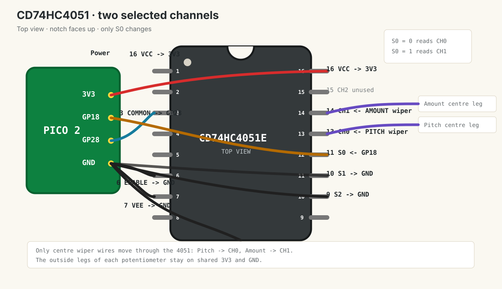

Dub Siren V3 · lesson 0010
Select two mux channels
Move Amount onto CH1 and let the Pico choose between Pitch and Amount through one ADC input.
1. The new idea
Lesson 9 used the 4051 as a fixed wire: CH0 was always selected. Today one Pico output controls the lowest selector bit, S0.
| S2 | S1 | S0 | Connected channel | Reads |
|---|---|---|---|---|
| 0 | 0 | 0 | CH0 · pin 13 | Pitch |
| 0 | 0 | 1 | CH1 · pin 14 | Amount |
S1 and S2 stay grounded, so only CH0 and CH1 are reachable. That keeps this lesson small.
2. Rewire with USB unplugged
- Keep 4051 power from lesson 9: pin 16 to 3V3, pin 8 to GND, pin 7 to GND, pin 6 to GND, capacitor between pin 16 and pin 8.
- Keep Pitch centre wiper on CH0 pin 13.
- Move Amount centre wiper away from
GP27and connect it to CH1 pin 14. - Keep both outside pins of the Amount pot on shared 3V3 and GND.
- Keep 4051 COMMON pin 3 connected to
GP28. - Move S0 pin 11 away from GND and connect it to
GP18. - Keep S1 pin 10 and S2 pin 9 connected to GND.

3. Read one channel, then the other
Run this main.py:
from machine import Pin
from picozero import Button, LED, Pot
from time import sleep, ticks_diff, ticks_ms
led = LED(15)
button = Button(14)
rate = Pot(26)
mux_adc = Pot(28)
mux_s0 = Pin(18, Pin.OUT)
def read_mux(channel):
mux_s0.value(channel)
sleep(0.002)
return mux_adc.value
pitch_value = read_mux(0)
amount_value = read_mux(1)
last_pitch_hz = -1
last_change = ticks_ms()
light_on = False
while True:
pitch_value += (read_mux(0) - pitch_value) * 0.1
amount_value += (read_mux(1) - amount_value) * 0.1
pitch_hz = int(100 + pitch_value * 900)
if abs(pitch_hz - last_pitch_hz) >= 5:
print("Pitch:", pitch_hz, "Hz", "Amount:", round(amount_value, 2))
last_pitch_hz = pitch_hz
if button.is_pressed:
interval = int(500 - rate.value * 450)
now = ticks_ms()
if ticks_diff(now, last_change) >= interval:
light_on = not light_on
last_change = now
led.value = amount_value if light_on else 0
else:
led.off()
light_on = False
last_change = ticks_ms()
sleep(0.01)Why the tiny sleep exists
After mux_s0.value(channel), the 4051 changes its internal switch. The Pico ADC input then needs a very short moment to settle to the newly selected pot voltage. sleep(0.002) is 2 ms; slow for a computer, but very fast for your hand turning a knob.
4. Test independence
- Turn Pitch. The printed
Pitchnumber should change. LED brightness should not. - Hold Trigger and turn Amount. LED brightness should change. Printed Pitch should stay nearly fixed.
- Turn Rate. LED flash speed should change. Pitch and Amount should not swap roles.
- Shake the breadboard lightly. Values should remain stable like your fixed lesson 9 circuit.
Reading the mux makes the loop slower. Each loop reads two mux channels, and each read waits 2 ms for the ADC value to settle. The bottom sleep(0.01) adds another 10 ms, so one loop takes at least about 14 ms before Python overhead and occasional printing.
The LED does not toggle exactly every requested interval; the code only checks whether it is time to toggle once per loop. If the Rate knob asks for a 50 ms interval, the next check may happen around 56-64 ms instead. A full blink cycle has two toggles, so 50 ms on plus 50 ms off is roughly a 100 ms cycle, plus this loop timing effect.
Pitch and Amount are swapped
Unplug USB. Exchange only the two wiper wires going to CH0 pin 13 and CH1 pin 14.
Only Pitch works
Unplug USB. Recheck Amount centre wiper to CH1 pin 14. Also check S0 pin 11 reaches GP18, not GND.
Values jump when untouched
Unplug USB and reseat the relevant wiper wire. Large jumps are still usually contact problems. Small one- or two-step changes are normal ADC noise.
Done means
- GP28 reads two different pots through the 4051.
- GP18 controls S0.
- S1 and S2 stay grounded.
- Pitch controls printed frequency.
- Amount controls LED brightness.
Tell your teaching agent: whether Pitch and Amount stay independent, and whether the controls are accidentally swapped.